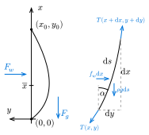

I came across this problem at work when we were prototyping a tethered drone system to supply in principle endless power to a multirotor drone. This can be used in natural catastrophes or military areas to cover it with a communication network. The problem described here is not really necessary for the prototyping so I took it as a personal project.
I had two main questions that I was constantly asking myself:
Can I derive the shape of the cable?
How much extra downward force is added to the drone and how does it change with wind?
Derivation
We look at the cable that has rigid end points \((0, 0)\) an \((x_0, y_0)\). There are two external forces acting on the cable, wind \(F_w\) and gravity \(F_g\). Figure 1 is depicting the situation. On the right there is a closeup of a small segment \(\D s\) of the cable. The forces acting on this differential segment are shown in blue.

Figure 1: Forces Acting on a Hanging Cable
We write the force balance for both \(x\) and \(y\)-axis \[
\begin{align*}
&x: &\quad T_x(x+\D x, y+\D y) - T_x(x, y) &= \rho g \D s \\
&y: &\quad -T_y(x+\D x, y+\D y) + T_y(x, y) &= f_w \D x.
\end{align*}
\tag{1}\] Here we separate the forces into perpendicular components \(T_x = T \cos\alpha\) and \(T_y = T \sin\alpha\). The parameters are mass density per unit length \(\rho\) and wind pressure \(f_w = F_w / l\), where \(l\) is the total length of the rope.
Naive approach
We seek for the solution \(y(x)\), exactly one \(y\) for each \(x\). From the Pythagoras we have \[
\D s = \D x \sqrt{ 1 + \left( \frac{\D y}{\D x} \right)^2 }.
\] Notice that when we divide both equations of system Equation 1 by \(\D x\) we have the definition of the derivative on the left side \[
\begin{align*}
\frac{\D T_x}{\D x} &= \rho g \sqrt{ 1 + \left( \frac{\D y}{\D x} \right)^2 } \\
\frac{\D T_y}{\D x} &= -f_w.
\end{align*}
\] The second equation is easily solved and the solution is \[
T_y = -f_w (x - \bar{x}),
\] where \(\bar{x}\) is the integration constant. The solution is a linear function that crosses zero at \(\bar{x}\). Since in the rope the forces always have to be tangential to it, the only place where \(y\) component will be zero is the extremal point. From the defintions of the force components we have that \(T_x = T_y/\tan\alpha = T_y / (dy/dx)\). Using the chain rule the first equation becomes \[
\frac{\D T_y}{\D x} \frac{\D y}{\D x} - T_y \frac{\D^2y}{\D x^2} = \rho g \sqrt{ 1 + \left( \frac{\D y}{\D x} \right)^2 } \left( \frac{\D y}{\D x} \right)^2.
\] Since we know \(T_y\) we can replace it and have our final equation \[
\begin{gathered}
-\frac{\D y}{\D x} + (x - \bar{x}) \frac{\D^2y}{\D x^2} = \kappa \sqrt{ 1 + \left( \frac{\D y}{\D x} \right)^2 } \left( \frac{\D y}{\D x} \right)^2, \\
l = \int_0^{x_0} \D s.
\end{gathered}
\tag{2}\] where \(\kappa = \rho g / f_w\) is a constant. This is a pretty complicated differential equation! And notice that we still do not know \(\bar{x}\) but it has a very clear physical meaning. So in order to get a solvable system we need the length constraint.
Problems
Solving this equation was a nightmare! I tried every possible method I knew for boundary value problems.
I started by using finite differences. The optimiser optimistix.IndirectLevenbergMarquardt worked reasonably well, but I had to lower the tolerances to \(10^{-3}\). It works for some very specific parameters but the final solution depends heavily on the initial guess. I used a second order polynomial with roots at the boundaries and the solution differs when scaling the initial guess.
To my surprise, shooting method worked better in the sense that it found only one correct solution. But it worked in an even smaller region of parameters. The reason I was surprised was because if you write the Equation 2 in the form of first order differential equation system standard form, then it involves division by \((x-\bar{x})\) which includes division by zero at \(\bar{x}\). But the solver handled it nicely if I added \(\varepsilon=10^{-4}\) to both the nominator and denominator. From the physics we know that \(\D y/\D x=0\) at \(\bar{x}\).
Parametric equation
Since there were a few problems with Equation 2, I needed to approach the problem from a different angle. So instead of solving for \(y(x)\), now we solve for \((x(s), y(s))\), where \(s\) is the cable length. This is beneficial because with high wind speed or very loose cable, the lower end will naturally want to drop down which would mean there are two \(y\)-s for each \(x\).
Instead of expressing the derivatives in \(x\) we now divide the force balance Equation 1 by \(\D s\)\[
\begin{align}
\frac{\D T_x}{\D s} &= \rho g \\
\frac{\D T_y}{\D s} &= f_w \frac{\D x}{\D s}.
\end{align}
\] From Figure 1 one can easily derive the geometric constraints for the Cartesian coordinates \[
\frac{\D x}{\D s} = \cos{\alpha} \qquad \frac{dy}{ds} = \sin{\alpha}.
\] Since the tension in the rope and the vector \((\D x, \D y)\) both have to be tangential to the rope, a similar relationship holds for tension \[
\cos{\alpha} = \frac{T_x}{\sqrt{T_x^2 + T_y^2}} \qquad
\sin{\alpha} = \frac{T_y}{\sqrt{T_x^2 + T_y^2}}.
\] So putting it all together we get a system of four equations \[
\begin{aligned}
\frac{\D x}{\D s} &= \frac{T_x}{T} &
\frac{\D y}{\D s} &= \frac{T_y}{T} \\
\frac{\D T_x}{\D s} &= \rho g &
\frac{\D T_y}{\D s} &= f_w \frac{T_x}{T}.
\end{aligned}
\tag{3}\] This system looks much easier than the one for finding \(y(x)\)Equation 2.
Wind force
For aerodynamic drag we can use a simple equation \[
F_w = \frac 12 \rho v^2 C_d S,
\] where \(\rho\) is the air density, \(v\) wind speed, \(C_d\) drag coefficient and \(S\) the cross-sectional area. Knowing that the cable has diameter \(d=1.2\unit{mm}\) and drag coefficient of a cylinder is \(C_d = 1.17\) the equation for wind pressure is \[
f_w = \frac{C_d}{2} \rho v^2 d.
\]
Solution
The problem has 4 natural boundary conditions \[
\begin{aligned}
x(0) &= 0 & x(L) &= x_0 \\
y(0) &= 0 & y(L) &= y_0.
\end{aligned}
\]
I used Jax to solve this with a shooting method.
Code
# parametric_shooting.pyimport jax.numpy as jnpimport diffraximport equinox as eqxfrom jaxtyping import Array, Float64, Intimport optimistix as optximport matplotlib.pyplot as pltclass EquationParameters(eqx.Module): n: Int s: Float64[Array, "n"] # noqa: F821 end_point: Float64[Array, "2"] length: Float64 mass: Float64 wind_pressure: Float64@propertydef g(self) -> Float64:return9.81def__init__(self, n, end_point, length, mass, wind_pressure):self.n = nself.s = jnp.linspace(0.0, length, num=n)self.end_point = end_pointself.length = lengthself.mass = massself.wind_pressure = wind_pressureclass InitialCondition(eqx.Module):"""Initial conditions for solving the system of equations. Values at s=0""" x: Float64 y: Float64 Tx: Float64 Ty: Float64def system(_s, S, params: EquationParameters): _x, _y, Tx, Ty = S T = jnp.sqrt(Tx**2+ Ty**2) cos = Tx / T sin = Ty / Treturn jnp.array([cos, sin, params.mass * params.g, params.wind_pressure * cos])def solve_ivp(ic: InitialCondition, params: EquationParameters): term = diffrax.ODETerm(system) solver = diffrax.Tsit5() controller = diffrax.PIDController( rtol=1e-6, atol=1e-6, ) y_init = jnp.array([ic.x, ic.y, ic.Tx, ic.Ty]) saveat = diffrax.SaveAt(ts=params.s) sol = diffrax.diffeqsolve( term, solver, t0=params.s[0], t1=params.s[-1], dt0=0.1, y0=y_init, args=params, stepsize_controller=controller, saveat=saveat, adjoint=diffrax.DirectAdjoint(), )return soldef shooting_objective(tension: Float64[Array, "2"], params: EquationParameters): ic = InitialCondition(0.0, 0.0, tension[0], tension[1]) sol = solve_ivp(ic, params)assert sol.ys isnotNone, "Solver did not return any values" sol_end = sol.ys[-1, [0, 1]]return sol_end - params.end_pointdef solve(tension_guess: Float64[Array, "2"], params: EquationParameters): solver = optx.IndirectLevenbergMarquardt( rtol=1e-5, atol=1e-5, verbose=frozenset({"step", "accepted", "loss", "step_size"}), ) sol_root = optx.root_find( shooting_objective, solver, tension_guess, args=params, max_steps=1000, throw=False, ) best_tension = sol_root.value ic = InitialCondition(0.0, 0.0, best_tension[0], best_tension[1]) final_sol = solve_ivp(ic, params)return final_sol
The example cable tensions and shape is on Figure 2.